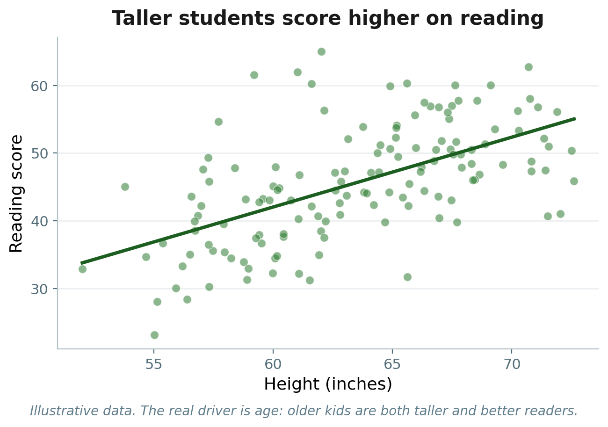

Module 10 • What happens when we account for other factors?
EDA6931 | Quantitative Methods in Educational Administration
Before We Begin
PlayPosit Question
In Module 8, SES predicted kindergarten reading scores, but it explained only 16% of the variation.
Besides SES, what factors do you think might predict how well a child reads? Name 2–3 and briefly explain why.
Respond in 2–3 sentences.
Where We Are
Last week you studied selection bias — some confounders you can observe and measure, and some you can’t. This module gives you the tool for the observable ones: statistical control.
Last module
Critically Reading Evidence
Selection bias Observable vs. unobservable
Module 9
Today
Multivariate Regression
Multiple predictors Controlling for other factors
Module 10
Coming up
Final Presentations
Present your capstone Saturday session
Module 11
In Module 9 you read about what it means to “control for” other variables. This week, back in Stata, you learn to actually do it, extending Module 8’s single predictor to several.
Part 1
Why We Need Controls
The Problem
Many of the factors that predict reading are also correlated with SES.
Non-English-speaking families tend to have lower SES. Children in poverty tend to have lower SES. If these factors also predict reading scores, then our SES coefficient may be picking up their influence too.
The 4.84-point slope from Module 8 might be partly about SES and partly about something else that happens to go along with SES.
Multiple regression lets us separate these out. But first, let me show you how this kind of confusion can happen.
Height and Reading: A Cautionary Tale

Taller kids score higher on reading tests. Should we stretch kids to make them better readers?
Of course not. Age is the confound — older kids are both taller and better readers. Control for age, and the relationship disappears.
A confound is a third variable that creates a misleading relationship between two others.
What Could Go Wrong
Confounds show up in education research all the time, in ways that are less obvious than height.
Private schools & test scores
Private-school students score higher — but their families have higher incomes. Is it the school or the family?
Class size & performance
Students in smaller classes do better — but smaller classes tend to be in wealthier districts. Is it class size or wealth?
Home language & reading
Non-English speakers score lower — but they are more likely to be in poverty. Is it language or poverty?
In each case, the relationship we see might be partly driven by something else.
Spotting a Confound
PlayPosit Question 1
A researcher finds that students who eat breakfast at school score higher on math tests. A colleague suggests this might be confounded. Which variable is most likely a confound?
Student height
Family income
Whether the student is left-handed
The day of the week the test was given
Part 2
What “Controlling For” Means
Controlling For: The Intuition
Non-English home language is linked to lower reading scores. But non-English families are also more likely to be in poverty.
In our data, 49% of non-English homes are in poverty, versus 20% of English homes. (χ² = 894.2, p < 0.001)
So when non-English speakers have lower reading scores, how much of that is about language and how much is about poverty? Let’s look at a simple table.
Mean Reading Scores by Language and Poverty
table nonengl poverty, statistic(mean x1rscalk1)
Not in poverty
In poverty
English
39.71
34.39
Non-English
37.81
32.33
Average reading scores, broken out by home language (rows) and poverty (columns). What patterns do you see?
Reading the Table
Across rows (within poverty groups)
Not in poverty: English 39.7 vs. Non-English 37.8 In poverty: English 34.4 vs. Non-English 32.3
→ The language gap exists within both poverty groups.
Down columns (within language groups)
English: Not poor 39.7 vs. Poor 34.4 Non-English: Not poor 37.8 vs. Poor 32.3
→ The poverty gap exists within both language groups.
Both factors matter independently. This is what “controlling for” shows us.
The Magic Wand
Imagine you could equalize poverty across language groups — so English and non-English families had the same poverty rates. What would the reading gap look like then?
That is what multiple regression does. It statistically equalizes the other variables so we can see the independent relationship between each predictor and the outcome.
These all mean the same thing: controlling for poverty · holding poverty constant · adjusting for poverty · accounting for poverty
Part 3
Multiple Regression in Stata
From Table to Regression
The conditional means table gave us the intuition. Regression formalizes it.
Same regress command as Module 8 — just two predictors on the right-hand side instead of one.
Reading the Output
nonengl = −1.97
Holding poverty constant, non-English homes score about 2 points lower (p < 0.001).
poverty = −5.36
Holding language constant, children in poverty score about 5.4 points lower (p < 0.001).
_cons = 39.71
Predicted score for an English-primary child not in poverty — matches the table’s top-left cell.
R² = 0.068
Together, language and poverty explain about 7% of the variation in reading.
Key comparison: the language coefficient was −3.28 alone, but −1.97 with poverty in the model — a 40% drop. Some of what looked like a language gap was really a poverty gap. But it did not disappear: both factors matter independently.
The Regression Equation
A regression equation is a compact way to communicate your whole model: the outcome, the predictors, the controls, and the unit of analysis. One line tells another researcher exactly what you estimated.
39.71 = constant (predicted score when all predictors equal zero)
eᵢ = the residual — the part of each child’s score the model does not explain (the unexplained variance from Module 8). The subscript i means every child has their own predicted score and their own residual.
Prediction: an English-speaking child in poverty → 39.71 + (−1.97)(0) + (−5.36)(1) = 34.36
Making a Prediction
PlayPosit Question 2
A researcher estimates: Math = 42.10 + (3.25)(SES) + (−1.50)(Female).
What is the predicted math score for a female student with SES = 0?
42.10
40.60
43.60
45.35
What Happened to the Coefficient?
When you add a control, three things can happen to your predictor of interest.
① Stays the same
The control is unrelated to X and Y.
② Shrinks
Some of X’s apparent effect was driven by the control.
③ Disappears
The entire relationship was driven by the confound.
Here, the language coefficient shrank but did not disappear — some of the language gap was really a poverty gap, but language still matters on its own.
Interpreting a Coefficient
PlayPosit Question 3
A researcher runs: regress math_score female ses. The coefficient on female is −1.8 (p = 0.03). Which interpretation is correct?
Girls score 1.8 points lower than boys on math.
Girls score 1.8 points lower than boys on math, holding SES constant.
SES causes girls to score lower on math.
Being female reduces math scores by 1.8 points.
Part 4
Building Models Step by Step
Building Models Step by Step
Researchers don’t throw every variable in at once. You start simple and add controls one at a time, watching how the results change.
This is called model building, and it is how you will present your capstone regression analysis.
Let’s go back to SES and reading — and build up from Module 8, one variable at a time.
Model 1: Reading ~ SES
regress x1rscalk1 x12sesl
estimates store model1
SES coefficient: 4.842*** (SE = 0.093) · R² = 0.161 · N = 14,088
For each one-unit increase in SES, reading scores increase by about 4.84 points. This is our Module 8 baseline.
SES moved slightly: 4.839 → 4.774. Language and SES are correlated, so adding language absorbs a small part of the SES estimate.
The non-English coefficient (−0.55) is much smaller than the bivariate (−3.28): most of the raw language gap is accounted for by SES.
Comparing Models Side by Side
esttab model1 model2 model3, se r2 label
Model 1
Model 2
Model 3
SES
4.842***
4.839***
4.774***
Female
0.983***
0.980***
Non-English
−0.545**
Constant
37.84***
37.36***
37.46***
R²
0.161
0.164
0.164
N
14,088
14,088
14,048
SES is robust to controls (4.84 → 4.84 → 4.77), and R² barely changes. The SES–reading relationship is not just a proxy for gender or language.
What a Higher R² Means
PlayPosit Question 4
A researcher predicts GPA from hours of study (R² = 0.12). She adds parental education as a control and R² increases to 0.19. What does this mean?
Parental education causes higher GPA.
Parental education explains some additional variation in GPA beyond study hours.
Study hours is no longer a significant predictor.
The model is now 19% accurate.
Part 5
Interpreting Results
Variable Roles
Outcome
Dependent variable
The variable you are trying to predict or explain. Example: reading scores
Predictor of Interest
Independent variable
The main variable whose relationship with Y you want to understand. Example: SES
Control Variable
Covariate
A variable included to account for its influence. Example: gender, home language
The choice of what to control for is a research decision, not just a statistical one. You need a reason to include each variable.
Is It Big Enough to Matter?
A coefficient can be statistically significant but practically tiny.
Statistical significance
Tells you whether an estimate is likely real. With 14,000+ observations, even very small effects reach p < 0.05.
Effect size
Tells you whether it matters. This is a separate question from significance.
We need benchmarks calibrated to education research.
Effect Size Benchmarks
Kraft (2020) benchmarks, in standard-deviation units — calibrated to education.
Our gender coefficient (0.98 points ÷ SD 9.66) = 0.10 SD — medium by education standards. Cohen’s generic benchmarks (0.2 / 0.5 / 0.8) are too generous for education; Kraft’s are grounded in what we actually see.
Statistical vs. Practical Significance
PlayPosit Question 5
A study of a new reading program finds students scored 0.02 SD higher than the control group (p = 0.04, N = 50,000). Using Kraft’s (2020) benchmarks, how would you describe this finding?
Statistically significant and practically large.
Statistically significant but practically small.
Not statistically significant.
The large sample size means the effect must be important.
Part 6
The Limits of Control
What Controls Can and Can’t Do
✅ What regression CAN do
Account for measured, observable factors that might confound the relationship.
We controlled for poverty and home language — both measured in the dataset.
❌ What regression CANNOT do
Account for unmeasured, unobservable factors.
Motivation, parenting quality, teacher effectiveness, neighborhood safety — none are in our data.
Statistical control is only as good as the variables you include.
Observable vs. Unobservable
You have seen this distinction before — it is the selection-bias problem from Module 9.
Observable ✅
SES, gender, home language, poverty. In the data, so regression can control for them.
Unobservable ❌
Motivation, parenting, teacher quality, peers. Not in the data, so regression does nothing about them.
Multiple regression handles the observable confounders. The unobservable ones are exactly the selection-bias problem you studied in Module 9 — which is why regression alone does not prove causation.
A Policy Scenario
PlayPosit Question 6
A district finds that teacher experience is associated with higher test scores, controlling for student demographics and school funding. The superintendent proposes hiring only experienced teachers.
What questions would you ask before supporting this policy? What unobservable factors might the regression be missing?
Respond in 2–3 sentences.
Looking Ahead
You now have the full descriptive toolkit: produce quantitative analysis, and evaluate it critically.
Complete the PlayPosit questions in the recorded lecture.
Optional: extra regression practice with the posted practice file, if you’d like more reps before the final.
Read: Kraft (2020) on interpreting effect sizes.
Your focus this week: work on your capstone submission and presentation.
Next: Module 11 — your final capstone presentation.